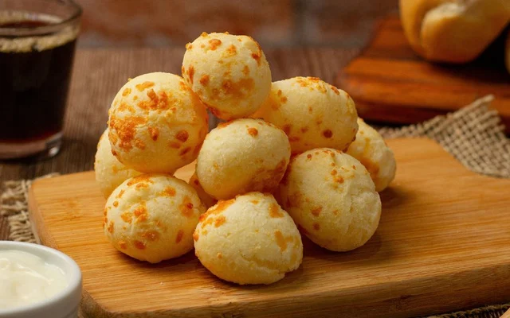

🧀 Pão de queijo
Feito principalmente com polvilho, queijo, ovos e leite, o pão de queijo tem casquinha levemente crocante e interior macio. É muito comum no café da manhã e no lanche da tarde, acompanhado de café quentinho. Apesar de ser encontrado em várias partes do Brasil, continua sendo um dos símbolos mais lembrados de Minas Gerais.